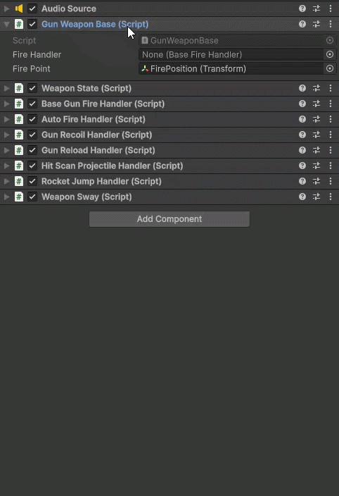

Role
Programmer
Engine
Unity
Language
C#
About the Project
Play as Augusta and Hastings as they live the fantastical story of their grandma as she tells them of her young days as a pirate on the Killick Ocean.
Work together to fight off enemy ships, endure the approaching storm and whatever the storm might bring.

Gameplay
Astro Plunder is a cartoony lightning fast FPS game where you use movement-based weapons that let you interact with the level and enemies in unique ways. Play as a pirate in a futuristic sci-fi world looking for treasure.
Programming
My work on the project focused on implementing and developing gameplay systems in C# using Unity.
This included a lot of movement mechanics and a modular weapon system that allowed the Game Designer to easily adjust and expand the weapons without requiring major changes to the underlying systems.

Technical Implementation
The project was developed using Unity and C#. I was in charge of the weapon system and the movement. For the weapons I created a componentbased weapon that was able to add onto it's behaviour through the Decorator-Pattern.
Project Links
Check it out on Itch!(Not up to date with the most recent additions and systems)